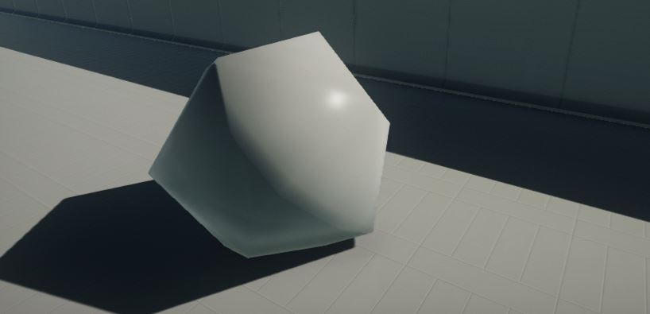
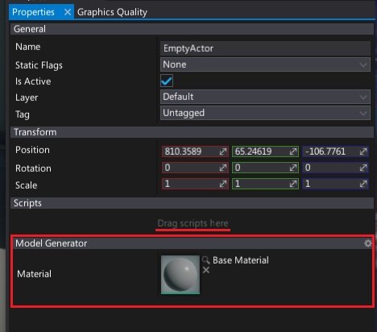

HOWTO: Generate procedural model

In this tutorial you will learn how to create a simple icosahedron mesh.
This sample uses C# API method Content.CreateVirtualAsset
Tutorial
1. Create new C# script ModelGenerator
2. Write mesh data generating function
private void UpdateMesh(Mesh mesh)
{
const float X = 0.525731112119133606f;
const float Z = 0.850650808352039932f;
const float N = 0.0f;
var vertices = new[]
{
new Vector3(-X, N, Z),
new Vector3(X, N, Z),
new Vector3(-X, N, -Z),
new Vector3(X, N, -Z),
new Vector3(N, Z, X),
new Vector3(N, Z, -X),
new Vector3(N, -Z, X),
new Vector3(N, -Z, -X),
new Vector3(Z, X, N),
new Vector3(-Z, X, N),
new Vector3(Z, -X, N),
new Vector3(-Z, -X, N)
};
var triangles = new[]
{
1, 4, 0, 4, 9, 0, 4, 5, 9, 8, 5, 4,
1, 8, 4, 1, 10, 8, 10, 3, 8, 8, 3, 5,
3, 2, 5, 3, 7, 2, 3, 10, 7, 10, 6, 7,
6, 11, 7, 6, 0, 11, 6, 1, 0, 10, 1, 6,
11, 0, 9, 2, 11, 9, 5, 2, 9, 11, 2, 7
};
mesh.UpdateMesh(vertices, triangles, vertices);
}
3. Create model asset and model actor in OnStart function
private Model _tempModel;
public MaterialBase Material;
public override void OnStart()
{
// Create dynamic model with a single LOD with one mesh
var model = Content.CreateVirtualAsset<Model>();
_tempModel = model;
model.SetupLODs(new[] { 1 });
UpdateMesh(model.LODs[0].Meshes[0]);
// Create or reuse child model
var childModel = Actor.GetOrAddChild<StaticModel>();
childModel.Model = model;
childModel.LocalScale = new Vector3(100);
childModel.SetMaterial(0, Material);
}
public override void OnDestroy()
{
FlaxEngine.Object.Destroy(ref _tempModel);
}
Remember to dispose all the created at runtime resources to prevent memory leaks.
4. Add the script and set the material
